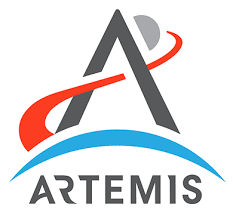
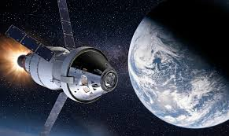
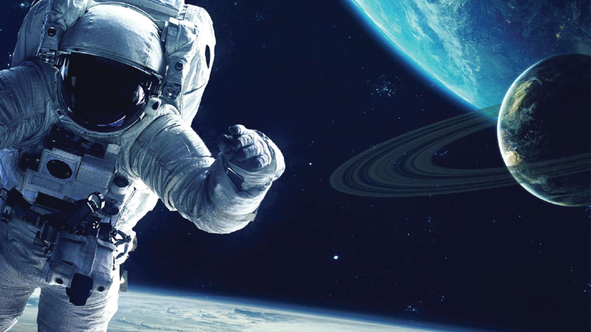
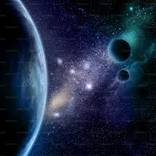

¿Qué es el espacio?
El espacio exterior es la enorme región que existe más allá de la atmósfera terrestre. Allí se encuentran galaxias, estrellas, planetas, cometas, meteoritos y muchos otros cuerpos celestes.
El universo es tan grande que todavía no se conoce completamente. Los científicos continúan explorándolo utilizando telescopios, satélites y misiones espaciales.
Explora el universo
Historia de la exploración espacial
Desde tiempos antiguos, las personas observaron el cielo para orientarse, medir el tiempo y comprender el universo.
En el siglo XVII, Galileo Galilei utilizó telescopios para estudiar la Luna y los planetas. Sus descubrimientos ayudaron a cambiar la forma en que las personas entendían el espacio.
En 1957 se lanzó el Sputnik 1, el primer satélite artificial. Este acontecimiento marcó el inicio de la era espacial.
En 1969, durante la misión Apollo 11, Neil Armstrong se convirtió en el primer ser humano en caminar sobre la Luna.
Actualmente se realizan investigaciones sobre Marte, agujeros negros, exoplanetas y la posibilidad de vida fuera de la Tierra.
Datos curiosos
La Luna
La gravedad en la Luna es mucho menor que en la Tierra.
Marte
Marte es conocido como el planeta rojo debido al color de su superficie.
Saturno
Saturno tiene enormes anillos formados por roca y hielo.
Sol
El Sol es una estrella gigante que proporciona luz y calor a la Tierra.
El Sistema Solar
El Sistema Solar está formado por el Sol y todos los cuerpos que giran a su alrededor.
Los ocho planetas principales son: Mercurio, Venus, Tierra, Marte, Júpiter, Saturno, Urano y Neptuno.
Algunos planetas son rocosos y otros son gigantes gaseosos. También existen lunas, cometas y asteroides.
Animaciones espaciales





Agujeros negros
Los agujeros negros son regiones del espacio con una gravedad extremadamente fuerte.
Su fuerza es tan intensa que ni siquiera la luz puede escapar.
Los científicos creen que se forman cuando estrellas gigantes colapsan después de una explosión.
Las galaxias
Una galaxia es un enorme conjunto de estrellas, gas y polvo cósmico.
Existen galaxias espirales, elípticas e irregulares.
La Vía Láctea es la galaxia donde se encuentra nuestro Sistema Solar.
Algunas galaxias son tan grandes que contienen billones de estrellas.
¿Existe vida en otros planetas?
Los científicos investigan constantemente si existe vida fuera de la Tierra.
Se estudian exoplanetas que podrían tener agua y condiciones similares a las de nuestro planeta.
Hasta el momento no se ha confirmado vida extraterrestre, pero continúan las investigaciones.